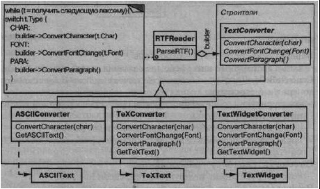
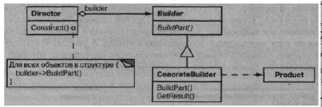

Паттерн Builder
Название и классификация паттерна
Строитель - паттерн, порождающий объекты.
Назначение
Отделяет конструирование сложного объекта от его представления, так что в результате одного и того же процесса конструирования могут получаться разные представления.
Мотивация
Программа, в которую заложена возможность распознавания и чтения документа в формате RTF (Rich Text Format), должна также «уметь» преобразовывать его во многие другие форматы, например в простой ASCII-текст или в представление, которое можно отобразить в виджете для ввода текста. Однако число вероятных преобразований заранее неизвестно. Поэтому должна быть обеспечена возможность без труда добавлять новый конвертор.
Таким образом, нужно сконфигурировать класс RTFReader с помощью объекта Text Converter, который мог бы преобразовывать RTF в другой текстовый формат. При разборе документа в формате RTF класс RTFReader вызывает TextConverter для выполнения преобразования. Всякий раз, как RTFReader распознает лексему RTF (простой текст или управляющее слово), для ее преобразования объекту TextConverter посылается запрос. Объекты TextConverter отвечают как за преобразование данных, так и за представление лексемы в конкретном формате.
Подклассы TextConverter специализируются на различных преобразованиях и форматах. Например, ASCIIConverter игнорирует запросы на преобразование чего бы то ни было, кроме простого текста. С другой стороны, TeXConverter будет реализовывать все запросы для получения представления в формате редактора TJX, собирая по ходу необходимую информацию о стилях. A TextWidget Converter станет строить сложный объект пользовательского интерфейса, который позволит пользователю просматривать и редактировать текст.
Класс каждого конвертора принимает механизм создания и сборки сложного объекта и скрывает его за абстрактным интерфейсом. Конвертор отделен от загрузчика, который отвечает за синтаксический разбор RTF-документа.
В паттерне строитель абстрагированы все эти отношения. В нем любой класс конвертора называется строителем, а загрузчик - распорядителем. В применении к рассмотренному примеру строитель отделяет алгоритм интерпретации формата текста (то есть анализатор RTF-документов) от того, как создается и представляется документ в преобразованном формате. Это позволяет повторно использовать алгоритм разбора, реализованный в RTFReader, для создания разных текстовых представлений RTF-документов; достаточно передать в RTFReader различные подклассы класса Text Converter.
Применимость
Используйте паттерн строитель, когда:
- алгоритм создания сложного объекта не должен зависеть от того, из каких частей состоит объект и как они стыкуются между собой;
- процесс конструирования должен обеспечивать различные представления конструируемого объекта.
Структура
Участники
- Builder (TextConverter) - строитель:
- - задает абстрактный интерфейс для создания частей объекта Product;
- ConcreteBuilder(ASCIIConverter,TeXConverter,TextWidgetConverter)- конкретный строитель:
- - конструирует и собирает вместе части продукта посредством реализации интерфейса Builder;
- - определяет создаваемое представление и следит за ним;
- - предоставляет интерфейс для доступа к продукту (например, GetASCI IText, GetT extWidget);
- Director (RTFReader) - распорядитель:
- - конструирует объект, пользуясь интерфейсом Builder;
- Product (ASCIIText, TeXText, TextWidget) - продукт:
- - представляет сложный конструируемый объект. ConcreteBuilder строит внутреннее представление продукта и определяет процесс его сборки;
- - включает классы, которые определяют составные части, в том числе ин-терфейсы для сборки конечного результата из частей.
Отношения
- клиент создает объект-распорядитель Director и конфигурирует его нужным объектом-строителем Builder;
- распорядитель уведомляет строителя о том, что нужно построить очередную часть продукта;
- строитель обрабатывает запросы распорядителя и добавляет новые части к продукту;
- клиент забирает продукт у строителя.
Следующая диаграмма взаимодействий иллюстрирует взаимоотношения строителя и распорядителя с клиентом.
Результаты
Плюсы и минусы паттерна строитель и его применения:
- позволяет изменять внутреннее представление продукта. Объект Builder предоставляет распорядителю абстрактный интерфейс для конструирования продукта, за которым он может скрыть представление и внутреннюю структуру продукта, а также процесс его сборки. Поскольку продукт конструируется через абстрактный интерфейс, то для изменения внутреннего представления достаточно всего лишь определить новый вид строителя;
- изолирует код, реализующий конструирование и представление. Паттерн строитель улучшает модульность, инкапсулируя способ конструирования и представления
сложного объекта. Клиентам ничего не надо знать о классах, определяющих внутреннюю структуру продукта, они отсутствуют в интерфейсе строителя.
Каждый конкретный строитель ConcreteBuilder содержит весь код, необходимый для создания и сборки конкретного вида продукта. Код пишется только один раз, после чего разные распорядители могут использовать его повторно для построения вариантов продукта из одних и тех же частей. В примере с RTF-документом мы могли бы определить загрузчик для формата, отличного от RTF, скажем, SGMLReader, и воспользоваться теми же самыми классами TextConverters для генерирования представлений SGML-документов в виде ASCII-текста, ТеХ-текста или текстового виджета;
- дает более тонкий контроль над процессом конструирования. В отличие от порождающих паттернов, которые сразу конструируют весь объект целиком, строитель делает это шаг за шагом под управлением распорядителя. И лишь когда продукт завершен, распорядитель забирает его у строителя. Поэтому интерфейс строителя в большей степени отражает процесс конструирования продукта, нежели другие порождающие паттерны. Это позволяет обеспечить более тонкий контроль над процессом конструирования, а значит, и над внутренней структурой готового продукта.
Реализация
Обычно существует абстрактный класс Builder, в котором определены операции для каждого компонента, который распорядитель может «попросить» создать. По умолчанию эти операции ничего не делают. Но в классе конкретного строите¬ля ConcreteBuilder они замещены для тех компонентов, в создании которых он принимает участие.
Вот еще некоторые достойные внимания вопросы реализации:
- интерфейс сборки и конструирования. Строители конструируют свои продукты шаг за шагом. Поэтому интерфейс класса Builder должен быть достаточно общим,
чтобы обеспечить конструирование при любом виде конкретного строителя.
Ключевой вопрос проектирования связан с выбором модели процесса кон-струирования и сборки. Обычно бывает достаточно модели, в которой результаты выполнения запросов на конструирование просто добавляются к продукту. В примере с RTF-документами строитель преобразует и добавляет очередную лексему к уже конвертированному тексту.
Но иногда может потребоваться доступ к частям сконструированного к данному моменту продукта. В примере с лабиринтом, который будет описан в разделе «Пример кода», интерфейс класса MazeBui Ider позволяет добавлять дверь между уже существующими комнатами. Другим примером являются древовидные структуры, скажем, деревья синтаксического разбора, которые строятся снизу вверх. В этом случае строитель должен был бы вернуть узлы-потомки распорядителю, который затем передал бы их назад строителю, чтобы тот мог построить родительские узлы.
- почему нет абстрактного класса для продуктов. В типичном случае продукты, изготавливаемые различными строителями, имеют настолько разные представления, что изобретение для них общего родительского класса ничего не дает. В примере с RTF-документами трудно представить себе общий интерфейс у объектов ASCIIText и TextWidget, да он и не нужен. Поскольку клиент обычно конфигурирует распорядителя подходящим конкретным строителем, то, надо полагать, ему известно, какой именно подкласс класса Builder используется и как нужно обращаться с произведенными продуктами;
- пустые методы класса Builder no умолчанию. В C++ методы строителя намеренно не объявлены чисто виртуальными функциями-членами. Вместо этого они определены как пустые функции, что позволяет подклассу замещать только те операции, в которых он заинтересован.
Пример кода
Определим вариант функции-члена CreateMaze, которая принимает в качестве аргумента строитель, принадлежащий классу MazeBuilder.
Класс MazeBuilder определяет следующий интерфейс для построения лабиринтов:
class MazeBuilder {
public:
virtual void BuildMaze() { }
virtual void BuildRoom(int room) { }
virtual void BuildDoor(int roomFrom, int roomTo) { }
virtual Maze* GetMaze() { return 0; }
protected:
MazeBuilder();
};
Этот интерфейс позволяет создавать три вещи: лабиринт, комнату с конкретным номером, двери между пронумерованными комнатами. Операция GetMaze возвращает лабиринт клиенту. В подклассах MazeBui Ider данная операция переопределяется для возврата реально созданного лабиринта.
Все операции построения лабиринта в классе MazeBuilder по умолчанию ничего не делают. Но они не объявлены исключительно виртуальными, чтобы в производных классах можно было замещать лишь часть методов.
Имея интерфейс MazeBuilder, можно изменить функцию-член CreateMaze, чтобы она принимала строитель в качестве параметра:
Maze* MazeGame::CreateMaze (MazeBuilder& builder) {
builder.BuildMaze();
builder.BuiIdRoom(l);
builder.BuiIdRoom(2);
builder.BuildDoor(1, 2);
return builder.GetMaze();
}
Сравните эту версию CreateMaze с первоначальной. Обратите внимание, как строитель скрывает внутреннее представление лабиринта, то есть классы комнат, дверей и стен, и как эти части собираются вместе для завершения построения лабиринта. Кто-то, может, и догадается, что для представления комнат и дверей есть особые классы, но относительно стен нет даже намека. За счет этого становится проще модифицировать способ представления лабиринта, поскольку ни одного из клиентов MazeBuilder изменять не надо.
Как и другие порождающие паттерны, строитель инкапсулирует способ создания объектов; в данном случае с помощью интерфейса, определенного классом MazeBuilder. Это означает, что MazeBuilder можно повторно использовать для построения лабиринтов разных видов. В качестве примера приведем функцию GreateComplexMaze:
Maze* MazeGame::CreateComplexMaze (MazeBuilder& builder) {
builder.BuildRoom(l);
builder.BuildRoom(lOOl);
return builder.GetMazeO ;
Обратите внимание, что MazeBuilder не создает лабиринты самостоятельно, его основная цель - просто определить интерфейс для создания лабиринтов. Пустые реализации в этом интерфейсе определены только для удобства. Реальную работу выполняют подклассы MazeBuilder.
Подкласс StandardMazeBuilder содержит реализацию построения простых лабиринтов. Чтобы следить за процессом создания, используется переменная _currentMaze:
class StandardMazeBuilder : public MazeBuilder {
public:
StandardMazeBuilder();
virtual void BuildMazeO;
virtual void BuildRoom(int);
virtual void BuildDoor(int, int);
virtual Maze* GetMazef);
private:
Direction CommonWall(Room*, Room*);
Maze* _currentMaze;
};
CommonWall (общая стена) - это вспомогательная операция, которая определяет направление общей для двух комнат стены.
Конструктор StandardMazeBuilder просто инициализирует „currentMaze:
StandardMazeBuilder::StandardMazeBuilder () {
_currentMaze = 0;
}
BuildMaze инстанцирует объект класса Maze, который будет собираться другими операциями и, в конце концов, возвратится клиенту (с помощью GetMaze):
void StandardMazeBuilder: : BuildMaze () {
_currentMaze = new Maze;
}
Maze* StandardMazeBuilder::GetMaze () {
return _currentMaze;
}
Операция BuildRoom создает комнату и строит вокруг нее стены:
void StandardMazeBuilder::BuildRoom (int n) {
if (!_currentMaze->RoomNo(n)) {
Room* room = new Room(n);
_currentMaze->AddRoom(room);
room->SetSide(North, new Wall);
room->SetSide(South, new Wall);
room->SetSide(East, new Wall);
room->SetSide(West, new Wall);
}
Чтобы построить дверь между двумя комнатами, StandardMazeBuilder находит обе комнаты в лабиринте и их общую стену:
void StandardMazeBuilder : rBuildDoor (int nl , int n2 ) {
Room* rl = _currentMaze->RoomNo (nl) ;
Room* r2 = _currentMaze->RoomNo (n2) ;
Door* d = new Door(rl, r2) ;
rl->SetSide(CommonWall(rl,r2) , d) ;
r2->SetSide(CommonWall(r2,rl) , d) ;
}
Теперь для создания лабиринта клиенты могут использовать Great eMaze в сочетании с StandardMazeBuilder:
Maze* maze;
MazeGame game;
StandardMazeBuilder builder;
game. CreateMaze (builder);
maze = builder. GetMaze ( );
Мы могли бы поместить все операции класса StandardMazeBuilder в класс Maze и позволить каждому лабиринту строить самого себя. Но чем меньше класс Maze, тем проще он для понимания и модификации, a StandardMazeBuilder легко отделяется от Maze. Еще важнее то, что разделение этих двух классов позволяет имет множество разновидностей класса MazeBuilder, в каждом из которых есть собственные классы для комнат, дверей и стен.
Необычным вариантом MazeBuiIder является класс Count ingMazeBuiIder. Этот строитель вообще не создает никакого лабиринта, он лишь подсчитывает число компонентов разного вида, которые могли бы быть созданы:
class CountingMazeBuilder : public MazeBuilder {
public:
CountingMazeBuilderO ;
virtual void BuildMazeO;
virtual void BuildRoom(int);
virtual void BuildDoor (int, int);
virtual void AddWall(int, Direction);
void GetCounts (int&, int&) const;
private:
int _doors,-
int _rooms;
};
Конструктор инициализирует счетчики, а замещенные операции класса MazeBuilder увеличивают их:
CountingMazeBuilder: : CountingMazeBuilder () {
_rooms = _doors = 0;
}
void CountingMazeBuilder::BuildRoom (int) {
_rooms++;
}
void CountingMazeBuilder: .-BuildDoor (int, int) {
_doors++;
}
void CountingMazeBuilder::GetCounts ( int& rooms, int& doors
) const {
rooms = _rooms;
doors = _doors;
}
Вот как клиент мог бы использовать класс CountingMazeBuilder:
int rooms, doors;
MazeGame game;
CountingMazeBuilder builder;
game.CreateMaze(builder);
builder.GetCounts(rooms, doors);
cout « "В лабиринте есть
« rooms « " комнат и "
« doors « " дверей" « endl;
Известные применения
Приложение для конвертирования из формата RTF взято из библиотеки ЕТ++ [WGM88]. В ней используется строитель для обработки текста, хранящегося в таком формате.
Паттерн строитель широко применяется в языке Smalltalk-80 [РагЭО]:
- класс Parser в подсистеме компиляции - это распорядитель, которому в качестве аргумента передается объект ProgramNodeBuilder. Объект класса Parser извещает объект ProgramNodeBuilder после распознава¬ния каждой ситаксической конструкции. После завершения синтаксического разбора Parser обращается к строителю за созданным деревом разбора и возвращает его клиенту;
- Class Builder- это строитель, которым пользуются все классы для создания своих подклассов. В данном случае этот класс выступает одновременно в качестве распорядителя и продукта;
- ByteCodeStream- это строитель, который создает откомпилированный метод в виде массива байтов. ByteCodeStream является примером нестандартного применения паттерна строитель, поскольку сложный объект представляется как массив байтов, а не как обычный объект Smalltalk. Но интерфейс к ByteCodeStream типичен для строителя, и этот класс легко можно было бы заменить другим, который представляет программу в виде составного объекта.
Родственные паттерны
Абстрактная фабрика похожа на строитель в том смысле, что может конструировать сложные объекты. Основное различие между ними в том, что строитель делает акцент на пошаговом конструировании объекта, а абстрактная фабрика - на создании семейств объектов (простых или сложных). Строитель возвращает продукт на последнем шаге, тогда как с точки зрения абстрактной фабрики продукт возвращается немедленно.
Паттерн компоновщик - это то, что часто создает строитель.